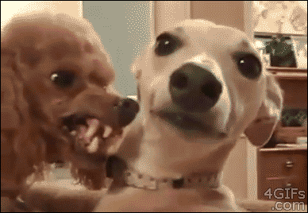

Encuentra a tu compañero ideal
En Mascotolines creemos que cada mascota merece un hogar lleno de amor. Aquí puedes encontrar perros, gatos y otras mascotas listas para adopción responsable. También contamos con accesorios, alimento y todo lo necesario para su bienestar.
